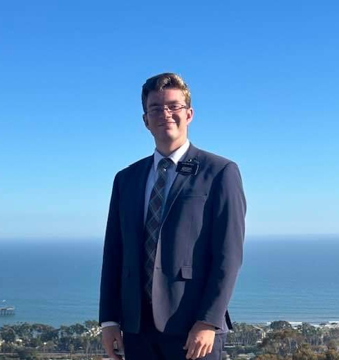

Levi Beasley - WDD130
¡Hola! This is my first semester at BYUI and so far it has been an amazing experience!
Some things that I love to do are playing video games and spending time doing things in nature such as fishing, hunting, and camping!
I served in the California Ventura Mission and I learned spanish! That was super fun and I still use it today!